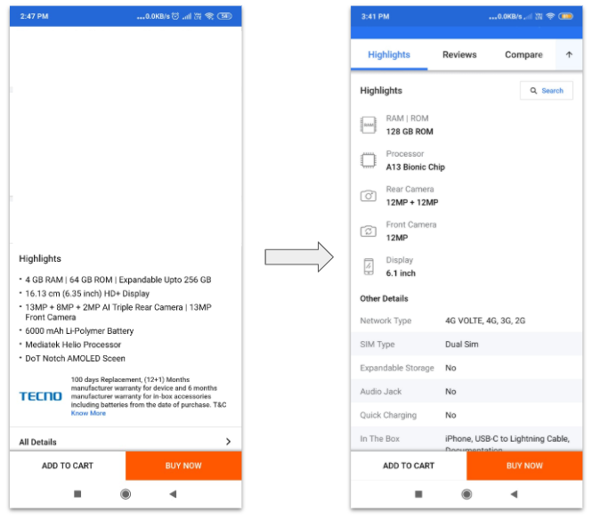
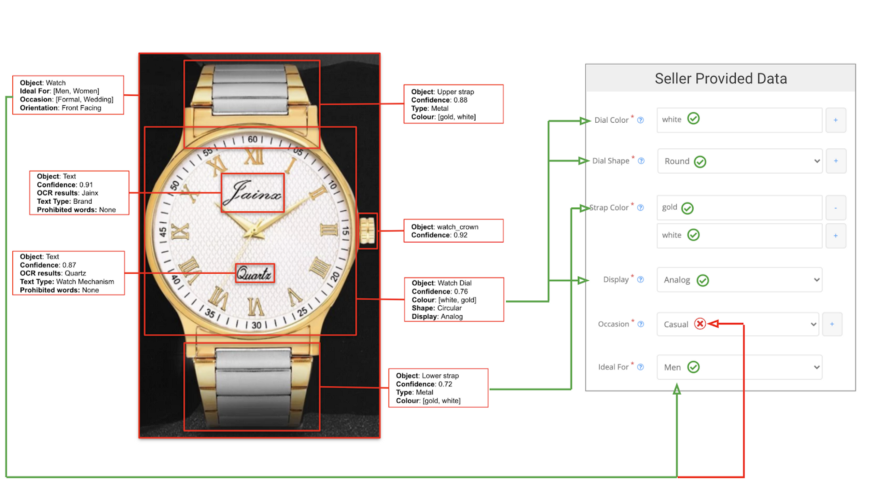

Led several User Experience and Design first initiatives to improve Flipkart’s app experience. The image on the right showcases one of the design revamp initiatives I lead, where we created better representations of our product catalogue information. Won the Value Champion award for Customer Focus in my team
Conceptualised and executed AutoQC - an AutoML platform that uses hundreds of machine learning models to provide real-time feedback to sellers on their product catalog. Check out my Tech Blog article on the same. Was awarded the Value Champion award for customer focus in my team. The AutoQC team also won the Best Team award (chosen out of 8 teams)